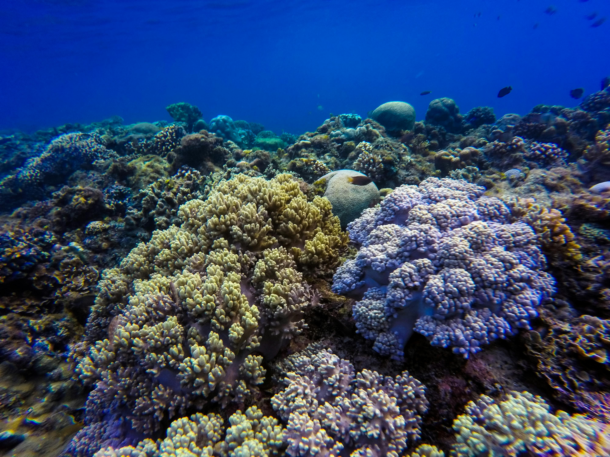

Defined as the loss of colour in corals due to stress, coral bleaching poses a serious threat to the ocean, armed with the ability to disrupt entire ecosystems. Coral bleaching appears when natural corals become white from loss of symbiotic algae and photosynthetic pigments, primarily due to rising water temperatures. This leads to eventual death of the coral resulting in numerous losses of habitats and marine life. Since coral reefs support a diversity of marine life, and as they decline, it disrupts the food chain, ultimately impacting humans who depend on reef-based ecosystems [1].


The prevalence of coral bleaching has escalated significantly in recent years due to climate change, pollution, and ulterior human activities [2]. Coral reefs are vital habitats for numerous marine organisms, and they provide necessities such as shelter and food.
When bleaching occurs, fish and other marine life lose their habitats, leading to imbalances and biodiversity loss [3]. Moreover, coral reefs offer coastal protection and support fishing industries and tourism.
Studies have shown that coral reefs act as a natural barrier against storms, highlighting the severe economic and environmental risks associated with reef degradation [4]. The United Nations estimates that half of the world’s coral reefs have been lost in the last 30 years, with future projections suggesting further significant losses if trends continue [5].
Our company has shown consistent growth over the past years, with revenue increasing annually due to strategic planning and innovation. This graph highlights key milestones in our journey, showcasing the upward trend in our financial success.